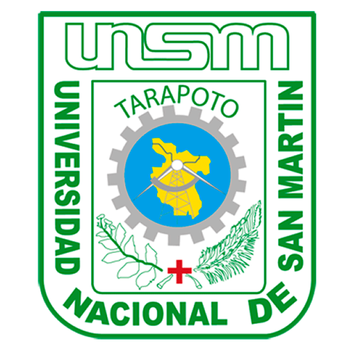

UNIVERSIDAD NACIONAL DE SAN MARTÍN
FACULTAD DE CIENCIAS DE LA SALUD


UNIDAD DE SEGUNDA ESPECIALIDAD
PROGRAMAS DE ESTUDIO
SEGUNDA ESPECIALIDAD EN OBSTETRICIA DE ALTO RIESGO CON MENCIÓN EN CUIDADOS INTENSIVOS MATERNOS
SEGUNDA ESPECIALIDAD EN ECOGRAFÍA OBSTÉTRICA CON MENCIÓN EN MONITOREO FETAL ELECTRÓNICO
SEGUNDA ESPECIALIDAD EN SALUD REPRODUCTIVA CON MENCIÓN EN PREVENCIÓN DE CÁNCER DE CUELLO UTERINO Y MAMA